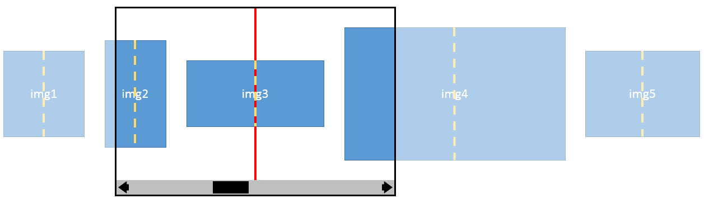
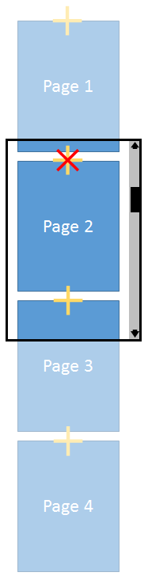

This module contains features to control panning and scrolling behavior with "snap points".
CSS is a language for describing the rendering of structured documents
(such as HTML and XML)
on screen, on paper, in speech, etc.
Status of this document
This is a public copy of the editors’ draft.
It is provided for discussion only and may change at any moment.
Its publication here does not imply endorsement of its contents by W3C.
Don’t cite this document other than as work in progress.
The (archived) public mailing list www-style@w3.org (see instructions)
is preferred for discussion of this specification.
When sending e-mail,
please put the text “css-snappoints” in the subject,
preferably like this:
“[css-snappoints] …summary of comment…”
Popular UX paradigms for scrollable content frequently employ paging through content,
or sectioning into logical divisions.
This is especially true for touch interactions
where it is quicker and easier for users to quickly pan through a flatly-arranged breadth of content
rather than delving into a heirarchical structure through tap navigation.
For example, it is easier for a user to view many photos in a photo album
by panning through a photo slideshow view
rather than tapping on individual photos in an album.
However, given the imprecise nature of scrolling inputs
like touch panning and mousewheel scrolling,
it is difficult for web developers to guarantee a well-controlled scrolling experience,
in particular creating the effect of paging through content.
For instance, it is easy for a user to land at an awkward scroll offset
which leaves a page partially on-screen when panning.
To this end, we introduce scroll snap points
which enforce the scroll offsets that a scroll container’s visual viewport may end at
after a scrolling operation has completed.
1.1. Module interactions
This module extends the scrolling user interface features defined in [CSS21] section 11.1.
This specification follows the CSS property
definition conventions from [CSS21]. Value types not defined in
this specification are defined in CSS Level 2 Revision 1 [CSS21].
Other CSS modules may expand the definitions of these value types: for
example [CSS3VAL], when combined with this module, expands the
definition of the <length> value type as used in this specification.
2. Motivating Examples
In this example, a series of images arranged in a scroll container are used to build a photo gallery. In this example the scroll container is larger than the photos contained within (such that multiple images may be seen simultaneously), and the image
sizes vary. Using mandatory element-based snap
points, scrolling will always complete with an image centered in the scroll container’s visual viewport.
img {
/* Defines the center of each photo as the
coordinate that should be used for snapping */
scroll-snap-coordinate: 50% 50%;
}
.photoGallery {
width: 500px;
overflow-x: auto;
overflow-y: hidden;
white-space: nowrap;
/* Specifies that each element’s snap coordinate should
align with the center of the scroll container */
scroll-snap-destination: 50% 50%;
/* Requires that scrolling always end at a snap point
when the operation completes (hard snap). */
scroll-snap-type: mandatory;
}

The layout of the scroll container’s contents in the example.
The snap-destination is horizontally and vertically centered within the scroll container’s visual viewport
(represented by a red X),
and each element has its snap coordinate horizontally and vertically centered within the element
(represented by yellow plus signs).
This example builds a paginated document that aligns each page near to (but not exactly on) the edge of the scroll container.
This allows the previous page to "peek" in from above in order to make the user aware that they are not yet at the top of the document.
Using proximity snap points instead of mandatory snap points allows the user to stop halfway through a page (rather than forcing them
to snap one page at a time). However, if a scrolling operation would finish near a snap point, then the scroll will be adjusted to
align the page as specified.
.page {
/* Defines the top center of each page as the
coordinate that should be used for snapping */
scroll-snap-coordinate: 50% 0;
}
.docScroller {
width: 500px;
overflow-x: hidden;
overflow-y: auto;
/* Specifies that each element’s snap coordinate should
align with the center of the scroll container, offset
a short distance from the top edge. */
scroll-snap-destination: 50% 100px;
/* Encourages scrolling to end at a snap point when the
operation completes, if it is near a snap point */
scroll-snap-type: proximity;
}

The layout of the scroll container’s contents in the example.
The snap-destination is horizontally centered and offset 100px from the top edge with respect to the scroll container’s visual viewport
(represented by a red X),
and each element has its snap coordinate horizontally centered and top-aligned with respect to the element
(represented by yellow plus signs).
3. Definitions
scroll container
An element which provides a scrolling user interface as described in [CSS21], particularly in the section on overflow.
The scroll-snap-type property is used to define how strictly snap points are enforced on the scroll container, if any are present. It defines how and when snap points are enforced on the visual viewport of the scroll container it is applied to in order to adjust scroll offset. It intentionally does not specify nor mandate any precise animations or physics used to enforce those snap points; this is left up to the user agent.
The visual viewport of this scroll container must ignore snap points, if any, when scrolled.
mandatory
The visual viewport of this scroll container is guaranteed to rest on a snap point when there are no active scrolling operations. That is, it must come to rest on a snap point at the termination of a scroll, if possible. If the content changes such that the visual viewport would no longer rest on a snap point (e.g. content is added, moved, deleted, resized), the scroll offset must be modified to maintain this guarantee.
proximity
The visual viewport of this scroll container may come to rest on a snap point at the termination of a scroll at the discretion of the UA given the parameters of the scroll. If the content changes such that the visual viewport would no longer rest on a snap point (e.g. content is added, moved, deleted, resized), the scroll offset may be modified to maintain this guarantee.
Describe the guarantee as an invariant for better clarity. Include edge case behavior such as mandatory snap points when there is no satisfiable snap point.
Should there be a way to specify that either end of the scrollable content should have a snap point?
The scroll-snap-destination property is used to define the x and y coordinate within the scroll container’s visual viewport
which element snap points will align with.
Specifies the offset of the snap destination from the start edge of the scroll container’s visual viewport. The first value gives the x coordinate of the snap destination, the second value its y coordinate.
The scroll-snap-coordinate property is used to define the x and y coordinate within the element
which will align with the nearest ancestor scroll container’s snap-destination for the respective axis. In the case that the element has been transformed, the snap coordinate is also transformed in the same way (such that the snap-point is aligned with the element as-drawn).
How does this work with fragmentation?
Consider alternative naming besides "coordinate". Consider naming conventions like in Grid Layout for grouping properties on the container vs. items.
Specifies the offset of the snap coordinate from the start edge of the element’s specified box. If the box argument is omitted it defaults to border-box.
Acknowledgments
Many thanks to lots of people for their proposals and recommendations, some of which are incorporated into this document.
Conformance
Document conventions
Conformance requirements are expressed with a combination of
descriptive assertions and RFC 2119 terminology. The key words "MUST",
"MUST NOT", "REQUIRED", "SHALL", "SHALL NOT", "SHOULD", "SHOULD NOT",
"RECOMMENDED", "MAY", and "OPTIONAL" in the normative parts of this
document are to be interpreted as described in RFC 2119.
However, for readability, these words do not appear in all uppercase
letters in this specification.
All of the text of this specification is normative except sections
explicitly marked as non-normative, examples, and notes. [RFC2119]
Examples in this specification are introduced with the words "for example"
or are set apart from the normative text with class="example",
like this:
This is an example of an informative example.
Informative notes begin with the word "Note" and are set apart from the
normative text with class="note", like this:
Note, this is an informative note.
Advisements are normative sections styled to evoke special attention and are
set apart from other normative text with <strong class="advisement">, like
this: UAs MUST provide an accessible alternative.
Conformance classes
Conformance to this specification
is defined for three conformance classes:
A style sheet is conformant to this specification
if all of its statements that use syntax defined in this module are valid
according to the generic CSS grammar and the individual grammars of each
feature defined in this module.
A renderer is conformant to this specification
if, in addition to interpreting the style sheet as defined by the
appropriate specifications, it supports all the features defined
by this specification by parsing them correctly
and rendering the document accordingly. However, the inability of a
UA to correctly render a document due to limitations of the device
does not make the UA non-conformant. (For example, a UA is not
required to render color on a monochrome monitor.)
An authoring tool is conformant to this specification
if it writes style sheets that are syntactically correct according to the
generic CSS grammar and the individual grammars of each feature in
this module, and meet all other conformance requirements of style sheets
as described in this module.
Partial implementations
So that authors can exploit the forward-compatible parsing rules to
assign fallback values, CSS renderers must treat as invalid (and ignore
as appropriate) any at-rules, properties, property values, keywords,
and other syntactic constructs for which they have no usable level of
support. In particular, user agents must not selectively
ignore unsupported component values and honor supported values in a single
multi-value property declaration: if any value is considered invalid
(as unsupported values must be), CSS requires that the entire declaration
be ignored.
Experimental implementations
To avoid clashes with future CSS features, the CSS2.1 specification
reserves a prefixed
syntax for proprietary and experimental extensions to CSS.
Prior to a specification reaching the Candidate Recommendation stage
in the W3C process, all implementations of a CSS feature are considered
experimental. The CSS Working Group recommends that implementations
use a vendor-prefixed syntax for such features, including those in
W3C Working Drafts. This avoids incompatibilities with future changes
in the draft.
Non-experimental implementations
Once a specification reaches the Candidate Recommendation stage,
non-experimental implementations are possible, and implementors should
release an unprefixed implementation of any CR-level feature they
can demonstrate to be correctly implemented according to spec.
To establish and maintain the interoperability of CSS across
implementations, the CSS Working Group requests that non-experimental
CSS renderers submit an implementation report (and, if necessary, the
testcases used for that implementation report) to the W3C before
releasing an unprefixed implementation of any CSS features. Testcases
submitted to W3C are subject to review and correction by the CSS
Working Group.
Describe the guarantee as an invariant for better clarity. Include edge case behavior such as mandatory snap points when there is no satisfiable snap point. ↵
Should there be a way to specify that either end of the scrollable content should have a snap point? ↵
Consider alternative naming besides "coordinate". Consider naming conventions like in Grid Layout for grouping properties on the container vs. items. ↵